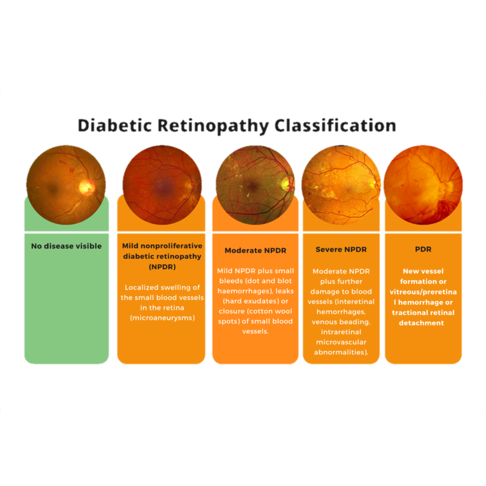
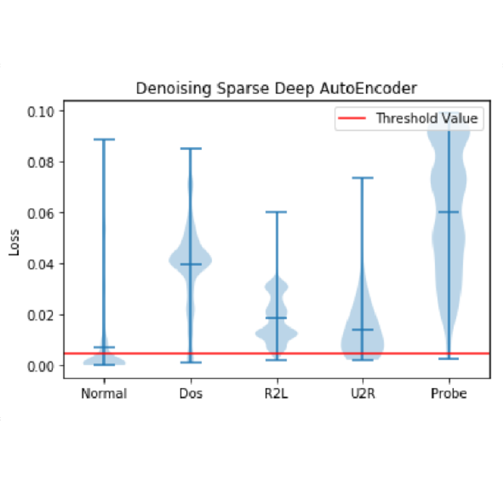
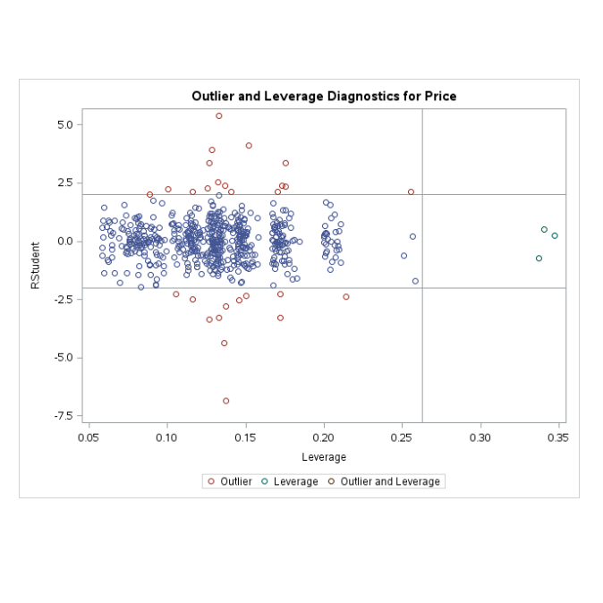

Insert information about yourself as a data scientist here.

MUKKESH GANESH
Work Experience
Current Position
Insert details about your current position as a data scientist here, including the company you work for and the projects you are currently working on.
Past Positions
Insert details about any past positions as a data scientist here, including the companies you worked for and the projects you worked on.
Research Projects

Diabetic Retinopathy Diagnosis with InceptionResNetV2, Xception and EfficientNetB3
December 2020
Tech Stack: Python, Tensorflow, Keras and SciKit-Learn
Investigated performance of transfer learning enhanced models on India-specific IDRiD dataset and experimented with data augmentation; Improved accuracy. Presented at ICRTAC 2020.
View Project

Autoencoder based Network Anomaly Detection
October 2020
Tech Stack: Python, Tensorflow, Keras and SciKit-Learn
Examined NLS-KDD dataset to train and evaluate performance of Denoising, Sparse and hybrid Autoencoders for Network Intrusion Detection. Presented at IEEE - TEMSMET 2020.
View Project
Breast Cancer Histopathological Image Classification
August 2020
Tech Stack: Python, Tensorflow, Keras and SciKit-Learn
Conducted analysis on models based on EfficientNet Architecture to classify breast cancer histopathological images; Performance exceeded prior SOTA ResNet & DenseNet models. Presented at IEEE-TEMSMET 2020.
View Project

Used Car Price Prediction using Supervised Learning Methodologies
December 2019
Tech Stack: SAS and Python
Tested the effectiveness of different machine learning models in predicting the price of used cars. Presented at the 2nd World Summit on Advances in Science, Eng. and Technology, Indiana, October 2019.
View ProjectAcademic Projects


Project 7
August 2020
Tech Stack:
Insert details about your seventh academic project here.
View Project
Project 8
August 2020
Tech Stack:
Insert details about your eighth academic project here.
View Project

Project 10
August 2020
Tech Stack:
Insert details about your tenth academic project here.
View Project